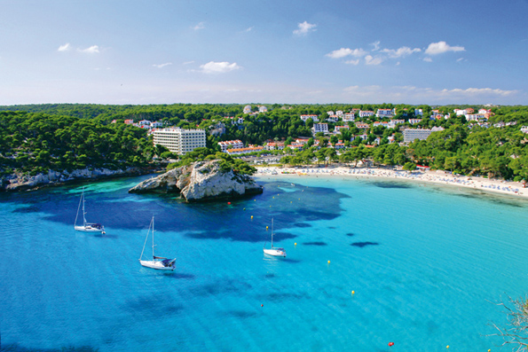

Ferreries, un poble amb essència
 Hi ha llocs que tenen un no-sé-què especial sense que un mateix sàpiga exactament què és; carrers en què un es perdria però sense conèixer exactament per què; un ambient que atrau encara que sigui per causes que un mateix ignora. Ferreries encaixa en aquesta descripció.
Hi ha llocs que tenen un no-sé-què especial sense que un mateix sàpiga exactament què és; carrers en què un es perdria però sense conèixer exactament per què; un ambient que atrau encara que sigui per causes que un mateix ignora. Ferreries encaixa en aquesta descripció.
Aquest cèntric poble, d'una mica més de 4500 habitants, s'ofereix al visitant com una estora blanca de tocs vermells, coronat pel campanar de l'església de Sant Bar-tomeu, parròquia que donà origen al municipi, situada en el centre del nucli antic del poble. Un nucli elegant, sense grans estridències, però que conforma un conjunt altament agradable. Els carrers amb més història de Ferreries ofereixen una es-tampa de gran harmonia. També en aquesta zona s'hi troben l'Ajuntament, els pous que antigament abastien els habitants del poble, l'antiga peixateria o l'arquitectura més tradicional. En aquests carrers s'hi respiren tranquil•litat i calma, com si l'estrès no hagués aconseguit penetrar en aquest poble tenyit de blanc.
A l'estiu, els habitants de Ferreries conserven el costum de treure les seves cadires menorquines al carrer i passar la velada xerrant, en el que aquí es coneix com “seure a la fresca”, senyal d'autenticitat d'una gent que es mostra sincera i genero-sa. Ferreries combina la tradició, l'essència d'un poble, amb la modernitat dels temps que corren. Des de sempre, aquest poble ha estat terra d'emprenedors. Els ferreriencs sempre han estat capaços d'obrir-se camí i tirar endavant. No en va, a Ferreries s'hi fabriquen sabates que es venen en el món sencer i que han trepitjat les passarel•les més importants del planeta, calçats en els peus de les models més cotitzades. També és aquí on es produeixen autèntiques avarques, des de tradicionals fins a les més innovadores. A més, el poble conta amb una important indústria del moble i la bijuteria, i és terra de producció de productes artesans com el for-matge. Si vostè recala a Ferreries, no perdi l'oportunitat de degustar el seu pa. Les fleques del municipi tenen fama de ser capaces de donar un sabor especial als pro-ductes sortits dels seus forns. Els dissabtes al matí el poble acull un mercat de pro-ductes agroalimentaris artesanals; ensumi, observi i assaboreixi els vertaders fruits de la terra menorquina. Pur sabor i naturalitat.
 Ferreries va néixer a finals del segle XIII i, encara que sembli mentida, és el muni-cipi més elevat de Menorca. S'aixeca una mitjana de 141 metres sobre el nivell del mar, i en el seu territori s'hi troben alguns dels monts més alts de l'Illa. S'Enclusa, antiga base militar americana, i Santa Àgueda, que acull les restes del castell àrab de Sent Agayz, atorguen al municipi una personalitat especial. En el camí cap a la cima de Santa Àgueda s'hi troba, a més, el tram d'una antiga calçada romana. Imagini com deu ser trepitjar el mateix paviment que els menorquins segles enrere! Un lloc tan emblemàtic, últim refugi dels àrabs de l'Illa, que ha donat peu a diverses llegendes (com la del vedell d'or). Històries i llegendes a part, val la pena pujar fins al cim (es tarda uns 45 minuts a peu) per gaudir de les vistes que ofereix la segona muntanya més alta de Menorca.
Ferreries va néixer a finals del segle XIII i, encara que sembli mentida, és el muni-cipi més elevat de Menorca. S'aixeca una mitjana de 141 metres sobre el nivell del mar, i en el seu territori s'hi troben alguns dels monts més alts de l'Illa. S'Enclusa, antiga base militar americana, i Santa Àgueda, que acull les restes del castell àrab de Sent Agayz, atorguen al municipi una personalitat especial. En el camí cap a la cima de Santa Àgueda s'hi troba, a més, el tram d'una antiga calçada romana. Imagini com deu ser trepitjar el mateix paviment que els menorquins segles enrere! Un lloc tan emblemàtic, últim refugi dels àrabs de l'Illa, que ha donat peu a diverses llegendes (com la del vedell d'or). Històries i llegendes a part, val la pena pujar fins al cim (es tarda uns 45 minuts a peu) per gaudir de les vistes que ofereix la segona muntanya més alta de Menorca.
Més enllà del poble, el municipi de Ferreries ofereix un gran nombre de paratges en els quals recalar, molt diferents segons si s'opta per la zona nord o per la sud. En el nord, la natura més salvatge de la Menorca gronxada per la tramuntana presenta escenaris com Ets Alocs, una cala de pedres arrodonides per l'acció del mar amb unes aigües cristal•lines, ideals pels amants de les platges indòmites. De camí a aquest paratge, dediqui un moment a visitar el Museu de Ciències Naturals de Men-orca, ubicat a la finca de Binissuès. El sorprendrà. Si es decanta pel sud, tres grans reclams destaquen sobre la resta. El primer és la platja de Cala Galdana. Un indret espectacular, una cala urbana ideal pel turisme familiar que busca totes les comodi-tats. La combinació perfecta dels serveis turístics més complets i un paisatge perfilat de penya-segats. El segon gran reclam és Cala Mitjana, una cala totalment verge les aigües turqueses de la qual, juntament amb la seva sorra blanca i fina, són un delit per qui es decanti per la natura en estat pur. Deixi's acariciar pel Sol, senti la brisa marina mentre observa l'entorn i descobreixi la petita Cala Mitjaneta. La imatge d'aquesta cala ha estat l'escollida per moltes de les postals que s'envien des de l'illa, així que deu ésser per algun motiu. L'últim reclam és el Barranc d'Algendar, un dels barrancs més espectaculars de Menorca. Desemboca en la platja de Cala Galdana, i ha estat bressol d'innumerables llegendes i mites. Pregunti per ells mentre perd els seus passos entre el paisatge contemplant la natura generosa. Tingui cura d'un entorn tan privilegiat que es mostra davant dels seus ulls amb total sinceritat.
Si li agrada el senderisme, no perdi l'oportunitat de visitar el Camí Reial. Segles enrere, aquesta via creuava tota l'Illa, des de Maó fins a Ciutadella, però amb el pas del temps i l'aparició d'altres trajectes alternatius acabaren deixant-lo en desús. No obstant això, amb l'esforç dels ferreriencs s'aconseguí recuperar un tram d'aquesta senda, transitable actualment. De fet, aquesta via consisteix en una elecció excel•lent si es vol enllaçar amb el Barranc d'Algendar.
Tornant al poble, si ja ha recorregut els carrers més antics, li recomanem que perdi uns minuts assegut en algun dels bancs de la Plaça Espanya. Reformat no gaires anys enrere, aquest espai és el centre neuràlgic del poble. Aquí se celebren mercats i fires, i també és l'escenari que escullen els nens per jugar i els pares per prendre un cafè. Assegui's i absorbeixi l'essència de l'Illa, no tingui pressa, simplement vis-qui. És el que aquí es coneix com “No passis pena”, una expressió que podria tra-duir-se com “No pateixis”. Carpe diem.
Ferreries celebra les seves festes patronals durant l'agost. Els dies 23, 24 i 25, el municipi ret homenatge al seu patró, Sant Bartomeu, i ho fa amb els cavalls com a protagonistes. Seguint el mateix ritual que a la resta de municipis de l'Illa, la cele-bració té com a punt àlgid els Jaleos, que tenen lloc el 23 a la tarda i el 24 al migdia en una plaça amb el terreny inclinat, fet que aporta encara més espectacularitat a l'actuació dels caixers. A més, el dia 25 el poble es deixa endur amb la celebració d'un peculiar Jaleo en què els cavalls són substituïts per ases. Un acte diferent i desacomplexat, en què la missió principal és divertir-se.
Si passa per la carretera general, veurà com el perfil de Ferreries se li dibuixa a pocs metres de la via. Val la pena dirigir el seu cotxe cap aquest poble de parets blanques i teulades rogenques. Sàpiga que, després de més de set segles d'història, encara no està clar d'on ve el nom del poble. Hi ha qui diu que “Ferreries” ve de “ferrers”, plantejant la possibilitat que alguna persona d'aquest gremi s'instal•lés a la zona per atendre les cavalleries de transport que passaven per l'interior de Menorca. Altres creuen que procedeix de “fraria”, ja que l'església de Sant Bartomeu s'aixecà sobre els terrenys que pertanyien als confrares mercedaris.
Sigui com sigui, Ferreries té molt per oferir-li: un poble que convida al passeig as-sossegat, unes platges aptes per als més còmodes, per als amants del verge i tam-bé per aquells que volen descobrir alguna cosa més que mantells de fina sorra blanca, alguns dels barrancs més imponents de l'Illa i alguna cosa, no se sap ben bé què, que atrau i enganxa. Deturi's a Ferreries.